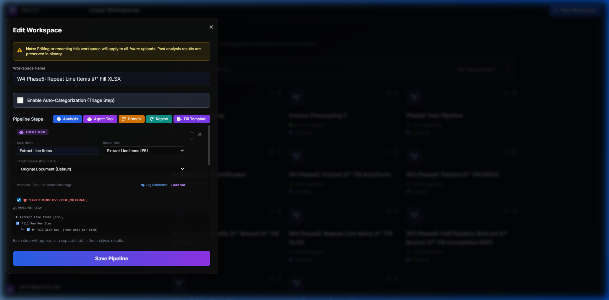

Tutorial 6: Repeat Loops over Arrays
Learn how to extract a list of items (like line items in an invoice) and map an Agent Tool to run sequentially over every item in that list.
1. Create a List Extraction Tool
First, create a JSON Schema with an array property. E.g. A schema called "Line Items", with a property `items` which is an array of objects containing `description` and `amount`.
Create an Agent Tool called "Extract Line Items" that uses this schema, with the prompt: "Extract all line items from the invoice into a list."
2. Create a Per-Item Analysis Tool
Create a second Agent Tool called "Audit Line Item".
In the prompt, type: "Audit this specific line item: {current_item}. Does the description sound like a legitimate business expense? Answer YES or NO with a brief reason."
3. Build the Looping Workspace
Create a new Workspace and open the pipeline editor.
Step 1: Add an Agent Tool step using the "Extract Line Items" tool.
Step 2: Click Add Repeat.
In the Repeat wizard, select the `items` array from Step 1 as the target list. Select your "Audit Line Item" tool as the tool to run on each iteration.

4. Execute and Verify
Using the Dashboard, run this Workspace on an invoice containing multiple line items.
Click into the execution log once complete.